october 2005
JAL @ night, a desktop planetarium
This project is an attempt to create a desktop planetarium, based on Bob Blick's propellor clock. It should be able to project stars and planets and to show the movement of the sky during a certain period.
Now Sega has released the homestar planetarium, and because the large number of problems still to be solved,
it's the right time to stop this project. We are still thinking of another planetarium project, based on projection through an LCD. And of course we're looking for a nice project with lot of LEDs ;-)
The problems still to be solved
The largest problem is to get an acceptable refresh rate, larger than 30 Hz. At the moment we get vibrations above 600 rpm (10Hz refresh rate). Although this is just a raw prototype and the the definite design should be better, we doubt that we can achieve an increase of speed with a factor of 3 (forces will then increase by a factor of 9). Increasing the refresh rate by using multiple interlaced arcs, but this requires a very accurate positioning.
With a 20 MHz PIC and images stored in the program memory, the smallest puls is about 25 usec (reading 3 words from program memory) which is about a factor 2 too slow. So this problem could be solved by a 40 MHz pic, which even might have more efficient methods to read the program memory.
The second problem is that the size of narrow beamed 3 mm LEDs is too large, to mimick a star.
Another problem is that even in this design we've interlaced picture, and the time correction being position dependant, can only be changed in discrete steps.
The last pictures
|
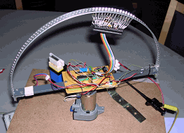 |
One set (16F877 with 28 LEDs) mounted on the half circle. In the middle the main PIC (16F876) is mounted which generates the clock, so all PICs will be fully synchronized.
Rx lines of all PICs are connected together. Tx lines of all PICs are wired-ored. Each PIC has an address, so the data in each PIC can be programmed through the same serial connector. |
|
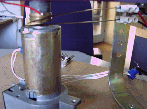 |
The swifel for transporting energy to the moving part. The swifel for the communication is not yet mounted here. The swifel is made from "verenstaal en het ringetje is een standaard messing ring it een 15 mm knelkopeling voor de waterleiding" |
|
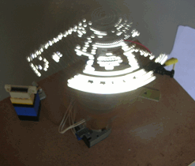 |
We have made a small Delphi program to load any picture into the PICs, here the result of the picture below (real size) is shown.
As you can see in the "2" (lower left corner), I think there are still a few lines interchanged. This image is mode near the centre of rotation, where of course the largest distorsion takes place :-( |
Design
Communicating at 1.25 Mbaud with 7 PICs in parallel, over some long wires, with just resistor pull-up (and maybe through a swiffel) is not reliable. Therefor the baudrate was decreased downto 19.2 kBaud. The transmitter outputs of the PICs are wired-ored with a pullup of 10 kOhm.
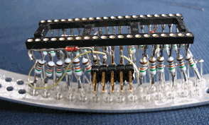 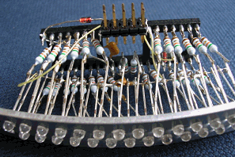
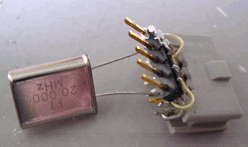 bootloader dongle must have a Xtal
Drilling the holes
Drilling holes in a stripe of aluminium (1*15) is done with the add of Schroff cabinet strip. The Schroff strip has nice 2.7 mm holes, spaced at 5 mm. The first drilling is done with a 2.5 mm drill. Later on it can then easily be drilled to 3 mm, even without a drill-standard. The 2 rows of holes are shifted 2.5 mm, so we get an interlaced spacing of the LEDs of 2.5 mm.
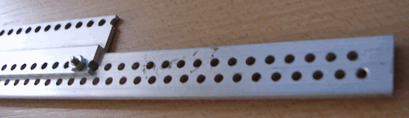
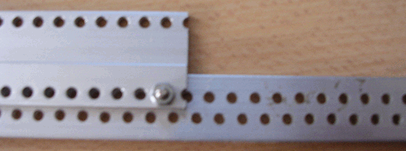
Bending the strip
After all the holes are drilled (at 2.5 mm) the strip is bend to a circle. We just made an simple construction, consisting of 2 wheels (sidewheels of a childrens bike), mounted on a plate of metal. The third wheel is mounted on a separate plate and fixed with some "lijmtangen" to the other plate. So we can slide the third wheel up, to make a smaller circle. The third wheel must be moved up in small steps to get a nice result. In this case we used 5 steps, to get the final result. It's important to notice that the ends of the strip are not perfectly a circle, so you've to make the strip about 5 cm longer on both sides.
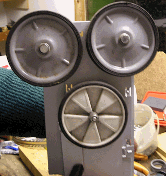 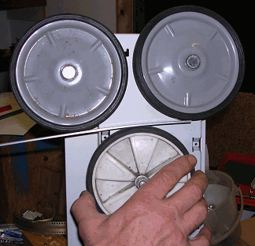
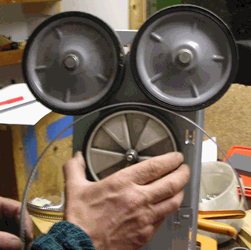 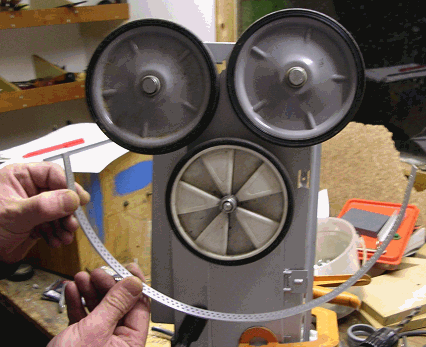
Tutoriel pour un afficheur à persistance rétinienne !
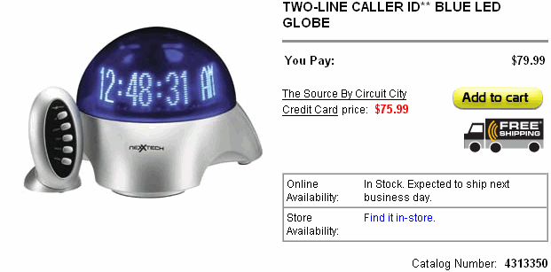
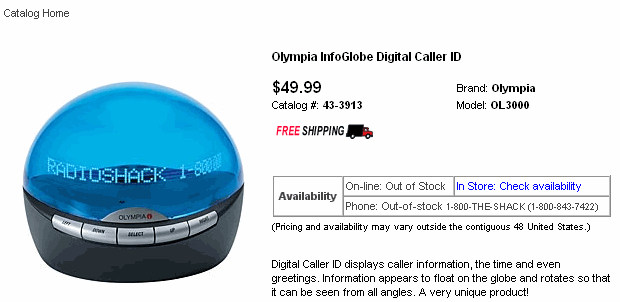
Olympia InfoGlobe Digital Caller ID
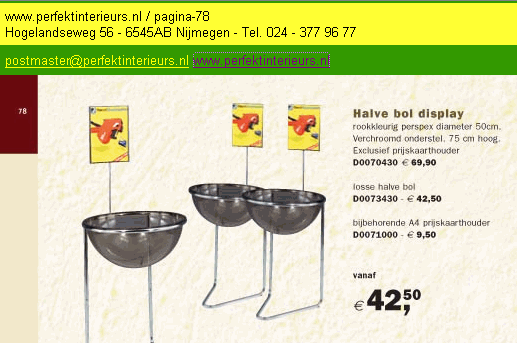
verkoopstandaards, halve bol display, rieten puntmanden,www.perfektinterieurs.nl
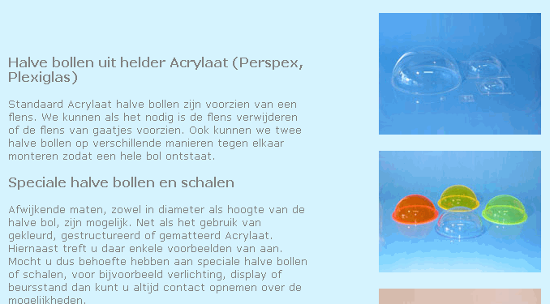
A N T H O N Y - K u n s t s t o f - Halve bollen en schalen
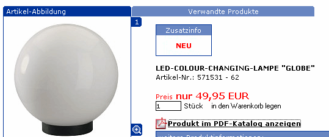